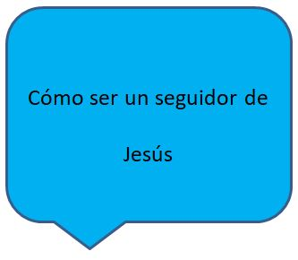

El Final de la Historia (Apocalipsis)
No importa lo que los ensayos se puede enfrentar como parte de ser Cristianos, tenemos la certeza muy grande de saber que Dios está en control de la historia. Él conoce el final de la historia, y que es siempre una fuente de alegría.
El Libro del Apocalipsis
El libro de Apocalipsis es el registro de una visión dada al apóstol Juan, cuando vivía en el exilio en la isla Griega de Patmos. Bien puede ser el libro más difícil de la Biblia para leer. Apocalipsis fue escrito durante un tiempo de gran persecución para los Cristianos; muchos estudiosos creen que Juan habría escrito en una especie de código, o utilizando símbolos, que habría sido bien entendido por los lectores Cristianos de su época. Algunos creen que la mayoría, si no todas, de las visiones descritas en el Apocalipsis ya se han cumplido.
Pero, así como con los profetas del Antiguo Testamento, Juan también pudo haber visto visiones de las cosas por venir. Por ejemplo, Satanás, la fuente del mal en el mundo, es descrita como siendo superados para siempre. Puesto que todavía hay mal en el mundo, esta profecía aún no se ha cumplido.
Aunque es difícil de entender algunos de los símbolos y las imágenes en el Apocalipsis, usted debe leer al menos una vez. Apocalipsis 1:3 promesas un bendición a los que la leen. Las cartas a las siete iglesias (Apocalipsis 2-3) tienen aún mucho que decir a la iglesia moderna. Y, si usted ha hecho alguna lectura en los profetas del Antiguo Testamento, usted encontrará las similitudes entre los estilos de escritura muy interesante.
Si leemos otra cosa en el Apocalipsis, hay que leer por lo menos el último capítulo, el capítulo 22. En él, encontramos gran esperanza para lo que nos espera cuando vayamos a nuestra casa en el cielo.
